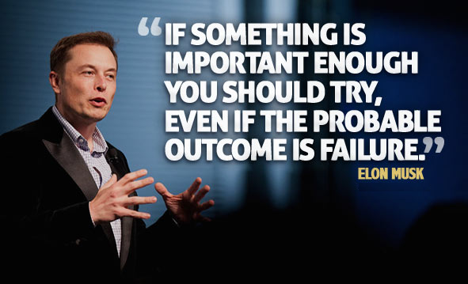

The Mindset of a Successful Entrepreneur: What It Takes to Win
Introduction
Entrepreneurship is not just about starting a business; it's about having the right mindset to
overcome challenges and seize opportunities. Many people dream of becoming entrepreneurs, but few
succeed. What separates the winners from the rest? It all comes down to mindset, strategy, and
execution.
Key Traits of Successful Entrepreneurs
Vision & Purpose
A successful entrepreneur has a clear vision of what they want to achieve. They don’t just
start a business for the sake of making money—they want to solve problems and create value.
For example, Elon Musk's vision with Tesla was not just about selling cars but
revolutionizing sustainable energy.
Ask yourself:
What problem am I solving?
How does my idea make life easier or better for people?

Taking Risks & Learning from Failure
Entrepreneurs are risk-takers, but they take calculated risks. They understand that failure
is a part of the journey. Instead of fearing failure, they learn from it. Jeff Bezos failed
multiple times before Amazon became a success.
Key lesson: Don’t be afraid to fail—be afraid of not trying.
Networking & Learning from Others
Entrepreneurs don’t succeed alone. They build strong relationships and learn from mentors.
Talking to experienced people can save you years of trial and error.
Ways to expand your network:
Attend startup events and business meetups.
Follow successful entrepreneurs on LinkedIn.
Join online communities where entrepreneurs discuss ideas.
Strong Work Ethic & Discipline
Building a business takes hard work and consistency. There are no shortcuts. Successful
entrepreneurs wake up early, work late, and stay disciplined even when they don’t feel like
it.
Daily habits of successful entrepreneurs:
Set clear goals.
Focus on important tasks first.
Stay consistent, even on tough days.
Adaptability & Innovation
The business world is constantly changing. Entrepreneurs who succeed are those who adapt and
innovate. Think about companies like Netflix. They started with DVD rentals but quickly
shifted to streaming when the market changed.
What you can do:
Stay updated on industry trends.
Always look for ways to improve and innovate.
Conclusion
Entrepreneurship is a journey that requires vision, adaptability, and resilience. If you have the
right mindset and work ethic, success is within reach. The question is: Are you ready to take the
leap?